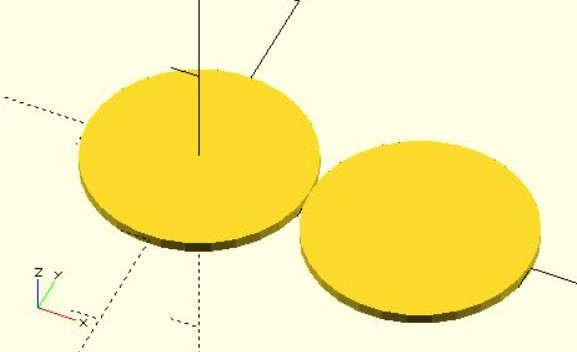
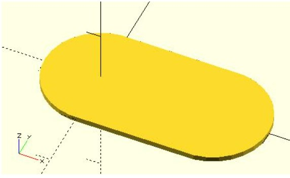
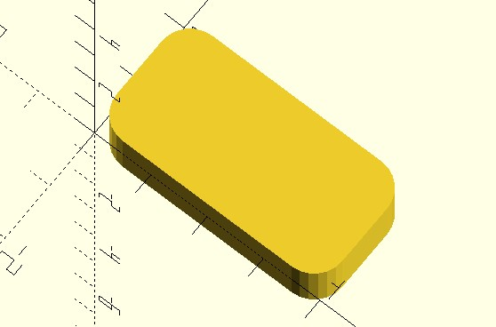
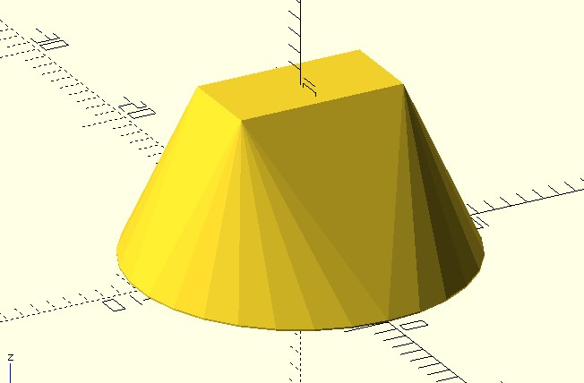
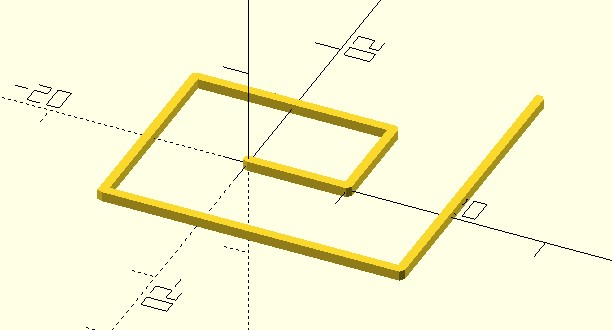
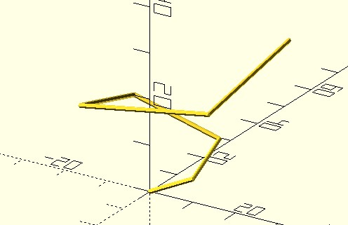

hull 繪製凸包
February 25, 2022hull 是列在〈OpenSCAD CheatSheet〉的 Transformations，可以基於指定的多個 2D 圖案，利用它們的頂點建立凸多邊形，或者基於指定的多個 3D 模型，利用它們的頂點建立凸多面體。
繪製凸包
hull 常翻譯為凸包，簡單來說，將全部的點包起來，成為凸多邊形或凸多面體，例如：
radius = 10;
circle(radius);
translate([2 * radius, 0, 0])
circle(radius);
這建立了兩個圓：

接著用 hull 將這兩個圓圍起來：
radius = 10;
hull() {
circle(radius);
translate([2 * radius, 0, 0])
circle(radius);
}
想想看你用收縮膜將兩個圓包起來會是如何呢？

該怎麼應用呢？OpenSCAD 提供了 square 可用來建立矩形，如果你想建立圓角矩形呢？可以自己來實作一個：
module rounded_square(size = [1, 1], corner_radius = 0.25, center = false) {
real_size = is_list(size) ? size : [size, size];
points = [
[0, 0] + [corner_radius, corner_radius],
[real_size.x, 0] + [-corner_radius, corner_radius],
[real_size.x, real_size.y] + [-corner_radius, -corner_radius],
[0, real_size.y] + [corner_radius, -corner_radius]
];
translate(center ? [-real_size.x / 2, -real_size.y / 2] : [0, 0])
hull() {
for(p = points) {
translate(p)
circle(corner_radius);
}
}
}
rounded_square([4, 2], corner_radius = 0.5, $fn = 24);
在以上的程式碼中也可以看到，OpenSCAD 的 list 可以使用 +，它會逐元素對應地進行加法，這會建立以下的模型：

hull 於 3D 的應用之一，是可以實作漸變，例如從圓變方：
hull() {
translate([0, 0, 10])
linear_extrude(.1)
square([5, 10], center = true);
linear_extrude(.1)
circle(10);
}
這就產生了以下的結果：

繪製線段
OpenSCAD 沒有繪製線的模組，一個簡單繪製線段的方式，就是透過 hull，例如，來建立一個繪製 2D 線段的模組：
module polyline2d(points, width = 1) {
half_width = width / 2;
for(i = [0:len(points) - 2]) {
hull() {
translate(points[i])
circle(half_width);
translate(points[i + 1])
circle(half_width);
}
}
}
polyline2d([
[0, 0],
[10, 0],
[10, 10],
[-10, 10],
[-10, -10],
[20, -10],
[20, 20]
]);
概念很簡單，每個點放個圓，每兩個圓建立一個凸包，聯集後看來就像個線段了：

類似地，也可以建立 3D 的線段：
module polyline3d(points, width = 1) {
half_width = width / 2;
for(i = [0:len(points) - 2]) {
hull() {
translate(points[i])
sphere(half_width);
translate(points[i + 1])
sphere(half_width);
}
}
}
polyline3d([
[0, 0, 0],
[10, 0, 5],
[10, 10, 10],
[-10, 10, 15],
[-10, -10, 20],
[20, -10, 25],
[20, 20, 30]
]);
概念也是很簡單，每個點放個球，每兩個球建立一個凸包，聯集後看來就像個線段了：

只不過，方才的兩個範例流程很類似，只是一個用圓，一個用球，如果自行指定球與圓，不就可以共用實作的流程了？是的！可以使用 children 模組，不過這就留待下一篇文件再來談…